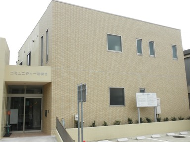
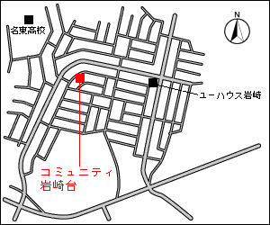

岩崎台自治会
メインメニュー
岩崎台区自治会事務局

建物名称
コミュニティー岩崎台
住所
〒470-0135
日進市岩崎台2丁目1503
Tel・Fax
0561-72-8633
開館時間
平日（月〜金曜日）
10:00〜12:00 / 13:00〜15:00

始めに
新着情報
4月4日更新
防災だより
4月4日更新
自治会
建築協約
防災会
熟年友の会
子ども会
サークル活動
公園愛護会
青色防犯パトロール
ホーム岩崎台
アンケート
お問い合わせ・外部リンク
メールで意見を送る
リンク集
日進市役所
香久山小学校
香久山自治会
愛知警察署
尾三消防本部
岩崎台・香久山福祉会館